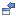
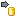
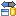
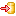
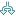
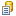
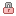
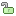

|
|
|
SVN Workspace Synchronization is shown in the 'Synchronize View' after a click on a 'Team>Synchronize' menu item or 'Synchronize' button on 'Team' toolbar of the 'Team Synchronizing' perspective. It provides a probability to inspect the changes types of your local copy from the remote one.
This is how 'SVN Workspace Synchronization' in the  'Synchronize View' looks like:
'Synchronize View' looks like:
Synchronization state
The synchronization state is shown with the help of the following icon decorations:
| Icon | Description |
| An incoming addition icon means, that the marked resource was added to a repository location, so it's new comparatively to the local copy. It will be added to the local copy after update action. | |
| An incoming change icon means, that some changes to the marked file were made comparatively to your local copy. The changes will be added to the local copy after update action. | |
| An incoming deletion icon means, that this resource was deleted from a repository location, but it's still contained in the local copy. It will be deleted from the local copy after update. | |
| An outgoing addition icon means, that the marked resource was added to the local copy, so it's new comparatively to the repository location. It will be added to the repository after commit action. | |
| An outgoing change icon means, that some changes to the marked file were made comparatively to the repository location. The changes will be added to the repository after commit action. | |
| An outgoing deletion icon means, that the marked resource was deleted from the local copy, but it's still contained in the repository location. It will be deleted the repository after commit action. | |
| A conflict addition icon means, that to different resources with the marked resource name were added both to the repository location and to the local copy. | |
| A conflict change icon means, that the changes, that can't be merged automatically were made both with local copy and repository one. A manual merge is required. The parents of the decorated resource will be also decorated. | |
| A conflict deletion icon means, that both local and repository's copy of the resource were deleted. | |
| A properties change icon means, that the properties of local or repository's resource were changed. |
Toolbar
Synchronize ( ) - starts synchronization with repository.
) - starts synchronization with repository.
Pin Current Synchronization ( ) - pins current synchronization, so other started synchronizations will be shown in another synchronization view.
) - pins current synchronization, so other started synchronizations will be shown in another synchronization view.
Next difference ( ) - shows the next difference of the resources.
) - shows the next difference of the resources.
Previous difference ( ) - shows the previous difference of the resources.
) - shows the previous difference of the resources.
Collapse all ( ) - redraws the view collapsing all expanded items.
) - redraws the view collapsing all expanded items.
Expand all ( ) - redraws the view expanding all collapsed items.
) - redraws the view expanding all collapsed items.
Incoming mode () - redraws the view showing only incoming changes.
Outgoing mode () - redraws the view showing only outgoing changes.
Incoming/outgoing mode () - redraws the view showing both incoming and outgoing changes.
Conflict mode () - redraws the view showing only conflict changes.
Update All Incoming Changes ( ) - activates the update action for all incoming changes.
) - activates the update action for all incoming changes.
Commit All Outgoing Changes () - activates the commit action for all outgoing changes.
Show Change Sets () - displays specific model based on change sets. The view shows incoming changes grouped by commit comment which is handy for seeing who released what and why. For outgoing changes, the user can create change sets to group related changes.
Drop-down menu:
) - pins current synchronization.Pop-up menu
Open in compare editor (files only) - opens the file in compare editor with its content on the left and repository file content on the right.
Open (files only) - opens the file with default editor.
Open with... (files only) - opens the file with probability to choose the editor.
Edit - provides a probability to copy, delete, move or rename a resource.
Synchronize - starts synchronization with repository.
Remove from View - removes the selected resource from the view. It will reappear in the view if it's synchronization status changes.
Update - activates the update action for the selected resource.
Commit... - activates the commit action for the selected resource.
Override and update... () - replaces the selected resource local copy with a repository one.
Override and commit... () - replaces the selected resource repository copy with a local one.
Mark as merged... - mark the file as if it is already merged.
Revert... () - reverts the file changes to the unmodified state.
Add to version control... - adds a selected resource to version control.
Add to svn:ignore... - adds a selected resource to svn:ignore.
Create Patch... - creates patch based on local changes.
Branch... () - creates branch from working copy.
Show History () - shows SVN History View for a selected resource.
Show Annotations - shows annotation for a selected resource.
Show Properties () - shows SVN properties of a selected resource.
Set Property... - sets property on local resource.
Set Keywords... - sets keywords on local resource.
Lock... () - locks local resource.
Unlock () - unlocks local resource.
Clean-up - performs clean-up for selected folder.